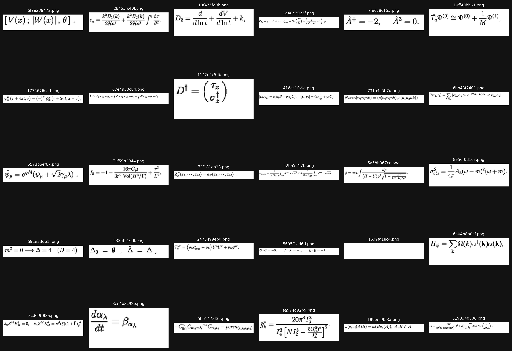
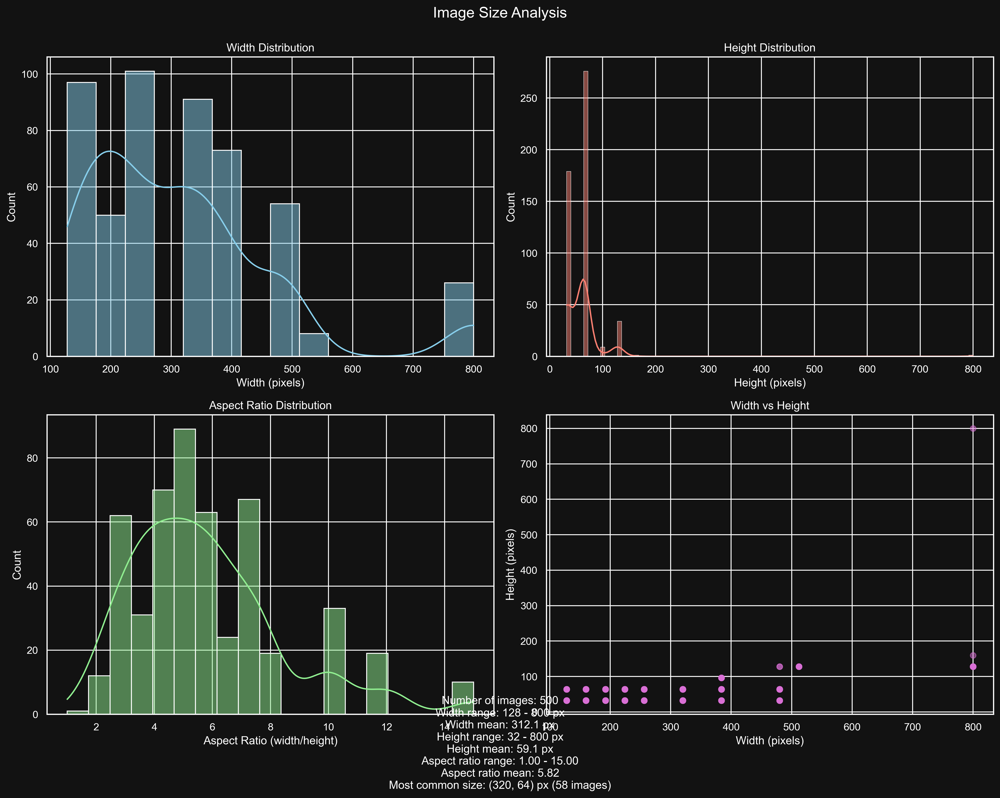
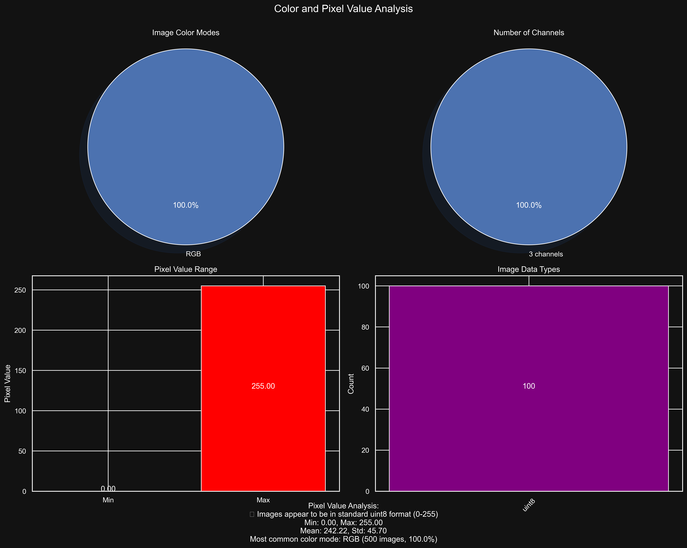
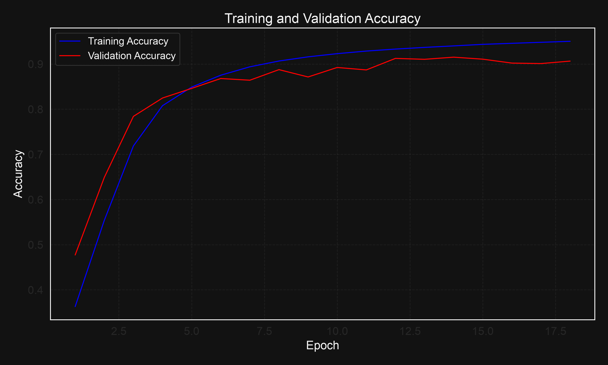
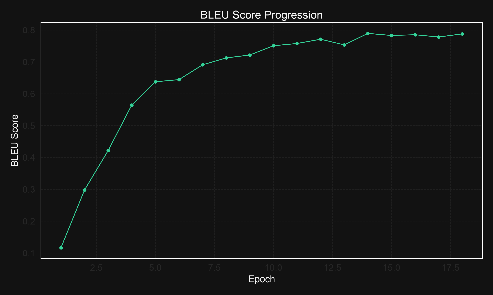
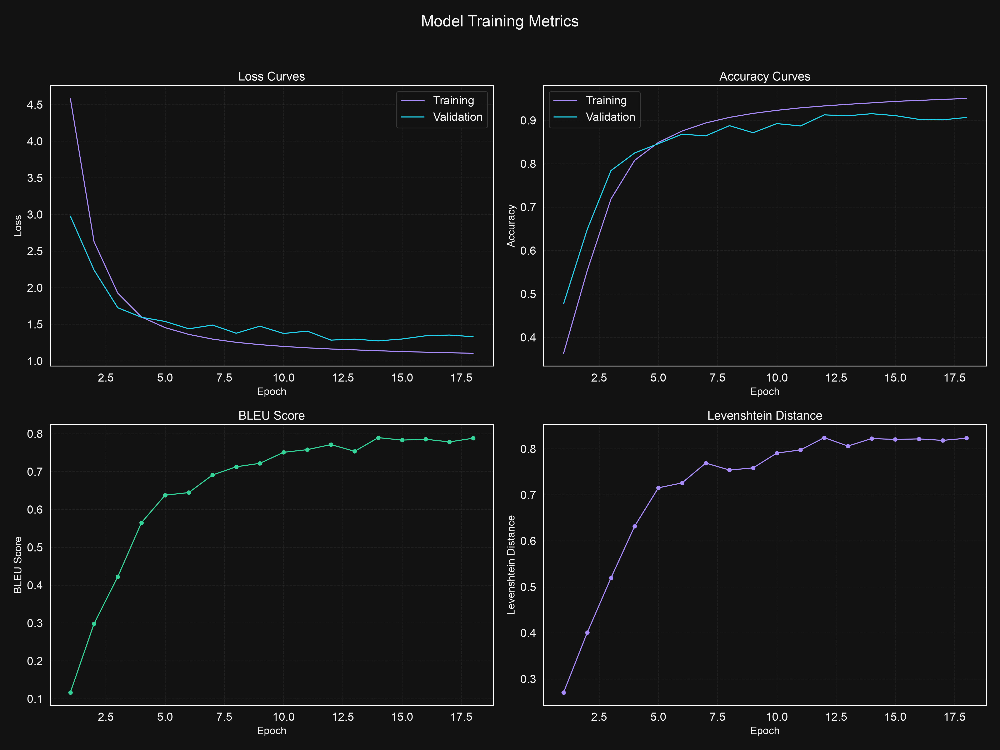

Sample images from the IM2LaTeX-100k dataset showing various mathematical expressions.
A deep learning-based system for converting images of mathematical expressions into LaTeX code, addressing challenges in digital document processing and enhancing accessibility of mathematical content.
The Image to LaTeX (img2latex) project implements a deep learning-based system for converting images of mathematical expressions into LaTeX code. This technology addresses a significant challenge in digital document processing: transforming visual representations of mathematical formulas into their corresponding markup representation, which is essential for editing, searching, and accessibility.
Mathematical expressions are ubiquitous in scientific, engineering, and academic literature, but transferring them between different formats can be cumbersome. Traditional Optical Character Recognition (OCR) systems often struggle with the complex two-dimensional structure of mathematical formulas. The img2latex project provides an end-to-end solution to automatically recognize and transcribe mathematical expressions from images, significantly reducing the manual effort required for digitizing printed mathematical content.
The system uses a spatial CNN encoder that keeps the formula as a 2D feature grid, then a Transformer decoder that attends over that grid with a padding mask. Validation BLEU, exact match, and edit distance are computed from autoregressive generation, not teacher-forced token accuracy.
The img2latex system uses the IM2LaTeX-100k dataset, which contains over 100,000 images of mathematical expressions paired with their corresponding LaTeX code. Our analysis of the dataset revealed:


Based on this analysis, our preprocessing pipeline includes:
The tokenizer is fit on the train split only with min_freq=5,
then sequences are truncated at 141 tokens. Batches are length-bucketed so padding waste
stays low.
The img2latex system offers two encoder variants that share the same Transformer decoder:
The default model (~4.45M parameters) consists of:
d_model=256,
then 2D sinusoidal positional encoding is added. The result is a spatial grid of
8×64 = 512 memory tokens plus a padding mask for empty canvas.The optional ResNet encoder replaces the CNN while keeping the same decoder:
children()[:-2]). layer4 stride is set to 1 so the feature
map stays a spatial grid (~/16) instead of collapsing to one vector.The previous CNN-LSTM / ResNet-LSTM stack collapsed each image to a single vector, so attention was a no-op. That, plus teacher-forced BLEU, is why the old report sat at 0.15 BLEU.
The training process implements several key strategies:
num_workers=0 on macOS to avoid OpenMP /
libomp collisions with PyTorch MPSDuring inference, the model offers greedy decoding and batched beam search:
Beam search is enabled in the predictor (it was previously short-circuited). Reported validation BLEU in this report uses greedy decode on 256 validation samples so the metric matches the checkpoint-selection criterion.
Experiments used the CNN-Transformer on Apple Silicon MPS. Checkpoints are selected on validation BLEU from autoregressive generation, not teacher-forced token accuracy. Key configuration:
Reported scores come from generated token sequences (greedy decode, 256 validation samples):
nltk method3)Best checkpoint is epoch 14 of a 30-epoch schedule (img2latex_transformer_v1). BLEU is autoregressive. The legacy CNN-LSTM report of 0.1539 BLEU was teacher-forced and is not comparable.

| Epoch | Val Loss | TF Acc | BLEU | Exact Match | Edit Dist |
|---|---|---|---|---|---|
| 1 | 2.9760 | 0.4773 | 0.1165 | 0.0% | 0.7295 |
| 5 | 1.5380 | 0.8461 | 0.6376 | 5.5% | 0.2848 |
| 10 | 1.3741 | 0.8924 | 0.7508 | 15.2% | 0.2093 |
| 14 | 1.2730 | 0.9152 | 0.7896 | 21.9% | 0.1778 |
| 18 | 1.3295 | 0.9065 | 0.7880 | 21.1% | 0.1770 |
The previous CNN-LSTM / ResNet-LSTM numbers were teacher-forced and used encoders that collapsed the image to a single vector:

Common error patterns included:
Sample generations on a long nested integral show the remaining failure mode: the model
recovers the overall structure (integrals, deltas, fractions) but still drops primes,
confuses \mathrm{e} with \operatorname{e}, and loses subscripts
inside nested fractions.
Analysis of our experiments revealed several important findings that inform future development directions.
The img2latex project converts printed math images to LaTeX with a spatial CNN encoder and a Transformer decoder. On IM2LaTeX-100k, the best checkpoint (epoch 14, Apple Silicon MPS) reaches generated BLEU 0.790, exact match 21.9%, and normalized edit distance 0.178.
Key achievements of the revision include:
Remaining gaps are mostly long nested formulas and rare symbols. The model still confuses similar glyphs and occasionally drops subscripts. Beam search at inference and a larger decoder would be the next levers; the Transformer rewrite already replaced the LSTM path that was planned as future work.
Future work could focus on:
min_freq=5The img2latex system is a working image-to-LaTeX converter with metrics that match what the decoder actually emits at inference time.
The CNN-Transformer reaches generated BLEU 0.790 and exact match 21.9% at epoch 14, versus the legacy teacher-forced BLEU of 0.1539. Spatial features and honest autoregressive metrics were the difference. Remaining errors concentrate on nested structure and rare symbols rather than a collapsed encoder.

Sample images from the IM2LaTeX-100k dataset showing various mathematical expressions.

Visualization of multiple performance metrics across training epochs, showing consistent improvement.